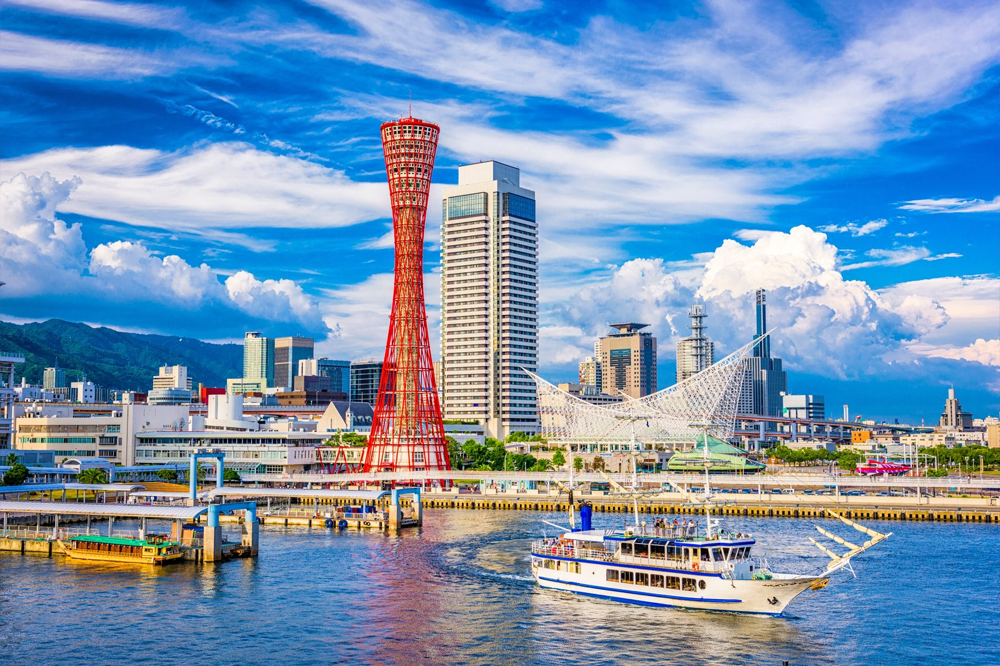
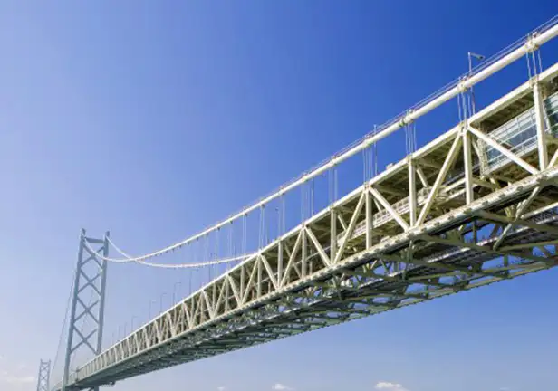

back
back
Attraction Features
 Himeji Castle is one of Japan’s most famous castles and spectacularly represents the pinnacle of Japanese castle architecture and technology. Known also as the “White Heron Castle,” for its resemblance to the majestic bird spreading its wings, this castle is a designated UNESCO World Heritage Site and a National Treasure of Japan. Himeji Castle will amaze all who visit with its pearly white appearance, winding pathways, and detailed interior; in addition to its beauty, Himeji holds significant history and stories of the people who lived here throughout the centuries. This article introduces this impressive castle and gives a preview of its highlights, as well as tips on how to best enjoy your visit to Himeji Castle.
 The Maiko Marine Promenade, a circuit-style promenade on the Akashi-Kaikyo Bridge, was constructed on the Kobe side of the bridge as an additional facility and was opened on April 5th, 1998. Situated approximately 47 meters above the sea and 150 meters above the ground, it has a total length of approximately 317 meters looking over the Akashi Strait. Information materials and a DVD system that explain the bridge are available on the first floor of the promenade. You can have a relaxing break looking at the bridge at the observation lounge on the 8th floor, where there is an observation camera system which makes you feel like you’re on top of the bridge’s 300-meter-high main tower. If want an additional thrill, try the “log-bridge 47 meters above the sea.”